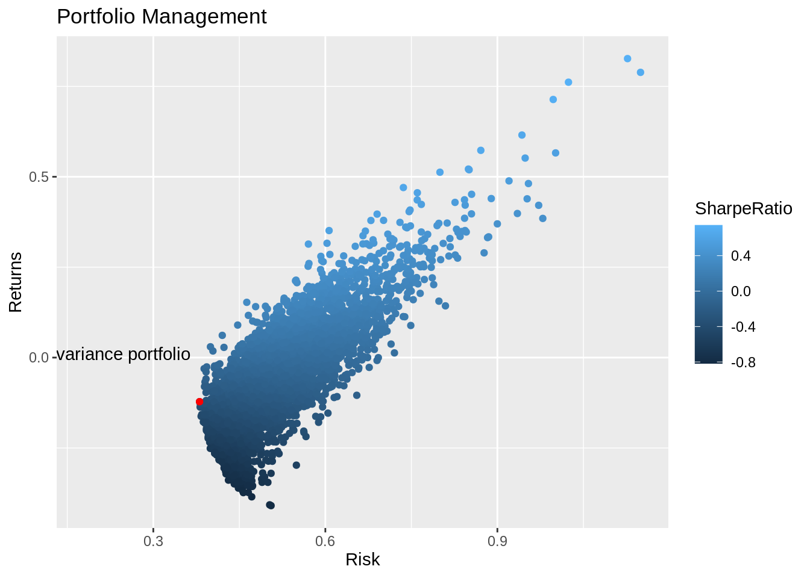

Chapter 43 Math Finance in R
Zhengyi(Skye) Chen and Shiyue Liu
library(reshape2)
library(ggplot2)
library(dplyr)
library(tidyquant)
library(plotly)
library(timetk)
library(tidyr)43.1 Introduction
Mathematical finance is a branch of applied mathematics where people aim at using mathematics to model the behavior of financial markets. Due to the heavy overlap between mathematical finance and computational finance(or to say, financial engineering), financial mathematicians also focus on applications and modeling using stochastic asset models. Financial market produces huge amount of time series data every day, which becomes the base of analysis for many mathematical finance problems.
In this session, we will first show how to use API to download data from Alpha Vantage. Then we use these stock price historical time series data to estimate the expected returns and covariance matrix. After that, we will use these to find an efficient asset allocation using mean/variance analysis.
43.2 Data Preparation
The time series data comes from Alpha Vantage. To download the data, first we need to register using email address and get an API key. The API key is a string with numbers and letters. After getting the API key, save it.
APIKey = "API_KEY" # Your API key
URLbase = 'https://www.alphavantage.co/query?'
func = 'TIME_SERIES_DAILY'Then we need to declare a list of tickers, which includes the company that we are interested in. The ticker is a abbreviation of the company name with a publicly traded stock.
tickerList = c( "T", # ATT (phone company)
"F", # Ford (car company)
"IBM", # IBM (computers, mostly software)
"MSFT", # Microsoft (software)
"BA", # Boeing (planes, civilian and military)
"GM", # General Motors (cars)
"AAPL", # Apple (computers, phones, software)
"GE", # General Electric (jet engines and other things)
"AMD", # AMD (chips)
"JPM", # J P Morgan Chase (bank)
"NVDA", # Nvidia (chips)
"SPY") # S & P ETFThe following ‘R’ code is to download the time series data of the company in the ‘tickerList’ and save it in separate ‘.csv’ files. It downloads time series daily closing price from \(T\) days before up to now. (citation)
tickerCount = 0 # how many tickers you've received so far.
SeventySeconds = 70 # how long to wait every five requests
for ( ticker in tickerList){
tickerCount = tickerCount + 1 # Get only five per minute
if ( ( tickerCount > 1 ) & ( (tickerCount %% 5) == 1 ) ){
cat("sleeping\n")
flush.console() # get the message without waiting
Sys.sleep(SeventySeconds) # Wait (sleep) a minute
}
URL = paste( c( URLbase, # create the request ...
"function=", func, # ... see documentation for the format.
"&symbol=", ticker,
"&apikey=", APIKey,
"&outputsize=full", # get the whole series, not just 100 days
"&datatype=csv"), collapse = "")
cat("Fetching with url ")
cat(URL)
cat("\n")
timeSeriesCSVfile = read.csv(URL) # send the request
cat("Got ticker ")
cat(ticker)
cat("\n")
csvFileName = paste( c("StockPriceTimeSeries_", ticker, ".csv"), collapse = "")
write.csv( timeSeriesCSVfile, file = csvFileName)
}Note that ‘Alpha Vantage’ has a restriction of fetching five tickers every minute, hence the code sleeps for 70 seconds between five downloading activities. Hence, we suggest to run this part separately and save the downloaded file to save time.
43.3 Empirical coveriance matrix
After getting the data, we want to read the data from the csv files and use them to compute the empicical covariance matrix for the same period of time.
First, we introduce the mathematical formulation:
Denote \(R_{t,k}\) as the actual daily return for asset \(k\) at time \(t\), \(\mu_k\) as the empirical mean daily return for asset \(k\), \(C\) is \(n*n\) symmetric matrix as the empirical covariance matrix, \(\sigma_{j,k}\) as the \(j,k\) element of matrix \(C\).
Now, we read the data from csv files:
tickerList = c( "T", # ATT (phone company)
"F", # Ford (cars)
"IBM", # IBM (computers, mostly software)
"MSFT", # Microsoft (software)
"BA", # Boeing (planes, aerospace)
"GM", # General Motors (cars)
"AAPL", # Apple (computers, phones, software)
"GE", # General Electric (jet engines, other things)
"AMD", # AMD (chips)
"JPM", # J P Morgan Chase (bank)
"NVDA", # Nvidia (chips)
"SPY") # S & P index ETF
# Read historical time series from .csv files in this directory
T = 250 # number of days of historical data to use
n = length(tickerList) # number of assets
# prices[t,k] = closing price on day t (counting back from today) of asset k
prices = matrix( nrow = T, ncol = n) # allocate memory for the matrix
for ( k in 1:n){ # iterate over k, not the ticker name
ticker = tickerList[k] # get the corresponding ticker name
fileName = paste( c( "https://raw.githubusercontent.com/ConnieeeeeLIU/EDAV/main/StockPriceTimeSeries_", # Every series starts like this
ticker, #
".csv"), # a .csv file
collapse = "") # no blanks between the parts
CSVfile = readr::read_csv( fileName )
closingPriceSeries = CSVfile[["close"]] # The column under "close"...
# ... holds the closing prices
for ( t in 1:T){ # Copy from the "data frame"...
prices[ t, k] = closingPriceSeries[t] # ... to the matrix
}
}Let’s first take a look at our data, we choose four companies here:
ATT (phone company)
Ford (cars)
IBM (computers, mostly software)
Microsoft (software)
The plot below is the closing price of these four companies in the past 250 days:
colnames(prices) = tickerList
day = as.Date("2021-03-04") - 0:249 # add the days of our data
df_price = data.frame(day, prices)
sub_df_price = df_price[c('day', 'T', 'F', 'IBM', 'MSFT')] # choose a subsample to show time serise,
# if all 12 is shown, it would be messy
sub_df_price <- melt(sub_df_price, id="day")
colnames(sub_df_price) <- c("day", "ticker", "price")
ggplot(data = sub_df_price,aes(x=day, y=price, group=ticker, color=ticker))+
geom_line()+
xlab("Day")+
ylab("Price")+
ggtitle("Closing price of four companies")
We can also use histograms to get a sense of distribution of different stocks:
df_price[c('day', 'MSFT')] %>%
ggplot(aes(MSFT)) +
geom_histogram(color='black', fill='grey', bins=20) +
ggtitle("Distribution of ticker of Microsoft")
df_price[c('day', 'T')] %>%
ggplot(aes(T)) +
geom_histogram(color='black', fill='grey', bins=20) +
ggtitle("Distribution of ticker of ATT")
Wow! we can tell how much more valuable Microsoft is than ATT here!
We can also use overlapped density distribution to better compare different companies!
sub_df_price%>%
ggplot(aes(x=price, fill=ticker)) +
geom_density(alpha=0.2) +
ggtitle("Overlapped Density Distribution of Four Stocks")
Now let’s start the math part in R!
Calculate the daily returns, the mean return, and the empirical covariance:
returns = matrix( nrow = (T-1), ncol = n)
for ( t in 1:(T-1)){
for ( k in 1:n){
returns[ t, k] = ( prices[ t+1, k] - prices[ t,k ])/prices[ t, k]
}
}
mu = matrix( 0, ncol = 1, nrow = n) # Column vector of expected returns
# initialized to zero so this works:
for ( k in 1:n){ # For asset k ...
for ( t in 1:(T-1)){ # ... add the returns over time
mu[k] = mu[k] + returns[t,k]
}
mu[k] = mu[k]/(T-1) # Divide by the number of samples ...
} # ... to get the empirical meanThe empirical mean daily return, \(\mu_k\), is the average daily return over the averaging period, \(T\). \[\sigma_{j,k} = \dfrac{1}{T-2} \sum^{T-1}_{t = 1}(R_{j,t}-\mu_j)(R_{k,t}-\mu_k)\] \[\sigma_{j,j} = \dfrac{1}{T-2} \sum^{T-1}_{t = 1}(R_{j,t}-\mu_j)^2\] Note that, here we need to devide by \(T-2\) since we have \(T\) data points, which gives \(T-1\) daily returns, and this results in \(T-2\) degrees of freedom.
43.4 Find efficient portfolios using mean/variance analysis
In this part, we want to find the minimum variance portfolio. After that, we also try to find the efficient portfolio that provides the same expected return as an equal weighted portfolio for comparison.
one_m = matrix(1, ncol = 1, nrow = n)
a = t(one_m)%*%solve(C)%*%one_m
b = t(one_m)%*%solve(C)%*%mu
c = t(mu)%*%solve(C)%*%mu
det_v = a*c-b^2
eq_a = a/det_v
eq_b = -2*b/det_v
eq_c = c/det_v
min_var = -(eq_b^2-4*eq_a*eq_c)/(4*eq_a)
mu_min_var = -eq_b/(2*eq_a)
lam_1 = (c-b*mu_min_var)/(det_v)
lam_2 = (a*mu_min_var-b)/(det_v)
w = lam_2[1,1]*solve(C)%*%mu + lam_1[1,1]*solve(C)%*%one_mIf it is an equal weighted portfolio, \(w\) would be:
Let’s have a look at the difference between equal weighted and minimum variance portfolio:
## min_Var: 0.0002455391## var_aver: 0.0009595658## var_aver-min_var: 0.0007140267## var_aver/min_var: 3.907996Lets see the weight for the stocks!
## [,1]
## [1,] 0.1427604624
## [2,] 0.0062456155
## [3,] -0.1042327822
## [4,] -0.3373815482
## [5,] -0.1569301515
## [6,] -0.0185447255
## [7,] 0.0008043995
## [8,] -0.0391292589
## [9,] -0.0105920351
## [10,] -0.3292557875
## [11,] -0.2766437179
## [12,] 2.1228995294From above result, we can see that the variance of equal weighted portfolio is about 400% higher than the portfolio with minimum variance! Notice that the weight for the 3, 4, 5, 6, 8, 9, 10, 11 elements are negative!
43.5 Select a set of ticker
Based on the weight given for the minimum variance portfolio, there are many weights that are negative. In this session, we want to select a set of ticker based on previous information.
Here, we would like to remove the tickers with negative weights. The reason is that when the weight is negative, the asset is easy to but but hard to sell. Hence, the risk is relatively high which is not what we want.
First, only preserve tickers with positive weights:
#only preserve tickers with positive weights
tickerList = c( "T", # ATT (phone company)
"F", # Ford (cars)
"AAPL", # Apple (computers, phones, software)
"SPY") # S & P index ETFThen, as what we did in previous step, read historical time series from .csv files in this directory:
T = 250 # number of days of historical data to use
n = length(tickerList) # number of assets
# prices[t,k] = closing price on day t (counting back from today) of asset k
prices = matrix( nrow = T, ncol = n) # allocate memory for the matrix
for ( k in 1:n){ # iterate over k, not the ticker name
ticker = tickerList[k] # get the corresponding ticker name
fileName = paste( c( "https://raw.githubusercontent.com/ConnieeeeeLIU/EDAV/main/StockPriceTimeSeries_",
ticker, #
".csv"), # a .csv file
collapse = "") # no blanks between the parts
CSVfile = readr::read_csv( fileName )
closingPriceSeries = CSVfile[["close"]] # The column under "close"...
# ... holds the closing prices
for ( t in 1:T){ # Copy from the "data frame"...
prices[ t, k] = closingPriceSeries[t] # ... to the matrix
}
}Next, calculate the daily returns, the mean return, and the empirical covariance:
returns = matrix( nrow = (T-1), ncol = n)
for ( t in 1:(T-1)){
for ( k in 1:n){
returns[ t, k] = ( prices[ t+1, k] - prices[ t,k ])/prices[ t, k]
}
}
mu = matrix( 0, ncol = 1, nrow = n) # Column vector of expected returns
# initialized to zero so this works:
for ( k in 1:n){ # For asset k ...
for ( t in 1:(T-1)){ # ... add the returns over time
mu[k] = mu[k] + returns[t,k]
}
mu[k] = mu[k]/(T-1) # Divide by the number of samples ...
} # ... to get the empirical mean
######Cov matrix
C = matrix( 0, ncol = n, nrow = n)
for (j in 1:n){
for (k in 1:n){
total = 0
for (t in 1:(T-1)){
total = total + (returns[t,j]-mu[j])*(returns[t,k]-mu[k])
}
C[j,k] = total/(T-2)
}
}
######
one_m = matrix(1, ncol = 1, nrow = n)
a = t(one_m)%*%solve(C)%*%one_m
b = t(one_m)%*%solve(C)%*%mu
c = t(mu)%*%solve(C)%*%mu
det_v = a*c-b^2
eq_a = a/det_v
eq_b = -2*b/det_v
eq_c = c/det_v
min_var = -(eq_b^2-4*eq_a*eq_c)/(4*eq_a)
mu_min_var = -eq_b/(2*eq_a)
lam_1 = (c-b*mu_min_var)/(det_v)
lam_2 = (a*mu_min_var-b)/(det_v)
w = lam_2[1,1]*solve(C)%*%mu + lam_1[1,1]*solve(C)%*%one_mLets check the weight!
## [,1]
## [1,] 0.43520296
## [2,] -0.16138052
## [3,] -0.00208128
## [4,] 0.7282588443.6 Visualization of Minimum Variance Portforlio
Next we can also visualize the process of locating the minimum variance portfolio in R; we still choose a small set with other five tickers as in last section.(citation2) We will start with creating 5000 random weights first to simulate 5000 random portfolios.
tickerList = c( "IBM", # IBM (computers, mostly software)
"MSFT", # Microsoft (software)
"AAPL", # Apple (computers, phones, software)
"JPM", # J P Morgan Chase (bank)
"NVDA") # Nvidia (chips)# Almost the same steps to retrieve data again
T = 250 # number of days of historical data to use
n = length(tickerList) # number of assets
# prices[t,k] = closing price on day t (counting back from today) of asset k
prices = matrix( nrow = T, ncol = n) # allocate memory for the matrix
for ( k in 1:n){ # iterate over k, not the ticker name
ticker = tickerList[k] # get the corresponding ticker name
fileName = paste( c( "https://raw.githubusercontent.com/ConnieeeeeLIU/EDAV/main/StockPriceTimeSeries_",
ticker, #
".csv"), # a .csv file
collapse = "") # no blanks between the parts
CSVfile = readr::read_csv( fileName )
closingPriceSeries = CSVfile[["close"]] # The column under "close"...
# ... holds the closing prices
for ( t in 1:T){ # Copy from the "data frame"...
prices[ t, k] = closingPriceSeries[t] # ... to the matrix
}
}
# We use log returns here to make a better plot
log_returns = matrix( nrow = (T-1), ncol = n)
for ( t in 1:(T-1)){
for ( k in 1:n){
log_returns[ t, k] = log( prices[ t+1, k] / prices[ t,k ])
}
}
mean_return <- colMeans(log_returns)
# We also magnify the variance by annualizing it
C <- cov(log_returns) * 252Now we randomly choose 5000 weights for the portfolios, to see the return, risk and sharpe ratio of each portfolio:
num_iter <- 5000
weights <- matrix(nrow = num_iter,
ncol = length(tickerList))
portfolio_returns <- vector('numeric', length = num_iter)
portfolio_risk <- vector('numeric', length = num_iter)
sharpe_ratio <- vector('numeric', length = num_iter)
# Run 5000 portfolios
for (i in seq_along(portfolio_returns)) {
w <- runif(length(tickerList))
w <- w/sum(w)
weights[i,] <- w # weights
ret <- sum(w * mean_return) # returns
ret <- ((ret + 1)^252) - 1 # annualized returns
portfolio_returns[i] <- ret
sd <- sqrt(t(w) %*% (C %*% w)) # risk
portfolio_risk[i] <- sd
sr <- ret/sd # sharpe ratio
sharpe_ratio[i] <- sr
}# Put returns, risk and sharpe ratio of all portfolio into a small table: tibble!
portfolio_values <- tibble(Return = portfolio_returns,
Risk = portfolio_risk,
SharpeRatio = sharpe_ratio)
# Also combine weights and the values together
weights <- tk_tbl(weights)
colnames(weights) <- tickerList
portfolio_values <- tk_tbl(cbind(weights, portfolio_values))
# take a look here
head(portfolio_values)## # A tibble: 6 x 8
## IBM MSFT AAPL JPM NVDA Return Risk SharpeRatio
## <dbl> <dbl> <dbl> <dbl> <dbl> <dbl> <dbl> <dbl>
## 1 0.306 0.155 0.177 0.274 0.0876 -0.0142 0.469 -0.0304
## 2 0.0707 0.275 0.247 0.227 0.181 -0.0609 0.538 -0.113
## 3 0.291 0.129 0.179 0.113 0.289 -0.0926 0.478 -0.194
## 4 0.393 0.283 0.101 0.151 0.0707 -0.0690 0.411 -0.168
## 5 0.204 0.195 0.0145 0.187 0.399 -0.305 0.430 -0.710
## 6 0.00588 0.274 0.337 0.132 0.252 -0.0127 0.633 -0.0201Then we are going to show the minimum variance portfolio
## # A tibble: 1 x 8
## IBM MSFT AAPL JPM NVDA Return Risk SharpeRatio
## <dbl> <dbl> <dbl> <dbl> <dbl> <dbl> <dbl> <dbl>
## 1 0.428 0.449 0.00106 0.0960 0.0265 -0.154 0.379 -0.406Now let’s plot all of the portfolios and the minimum variance portfolio. It is very easier to see that the MVP refers to the portfolio with the smallest variance in all randomly composed portfolios.
portfolio_values %>%
ggplot(aes(x = Risk, y = Return, color = SharpeRatio)) +
geom_point() +
labs(x = 'Risk',
y = 'Returns',
title = "Portfolio Management") +
geom_point(aes(x = Risk,
y = Return), data = min_var, color = 'red') +
annotate('text', x = 0.18, y = 0.01, label = "Minimum variance portfolio") 